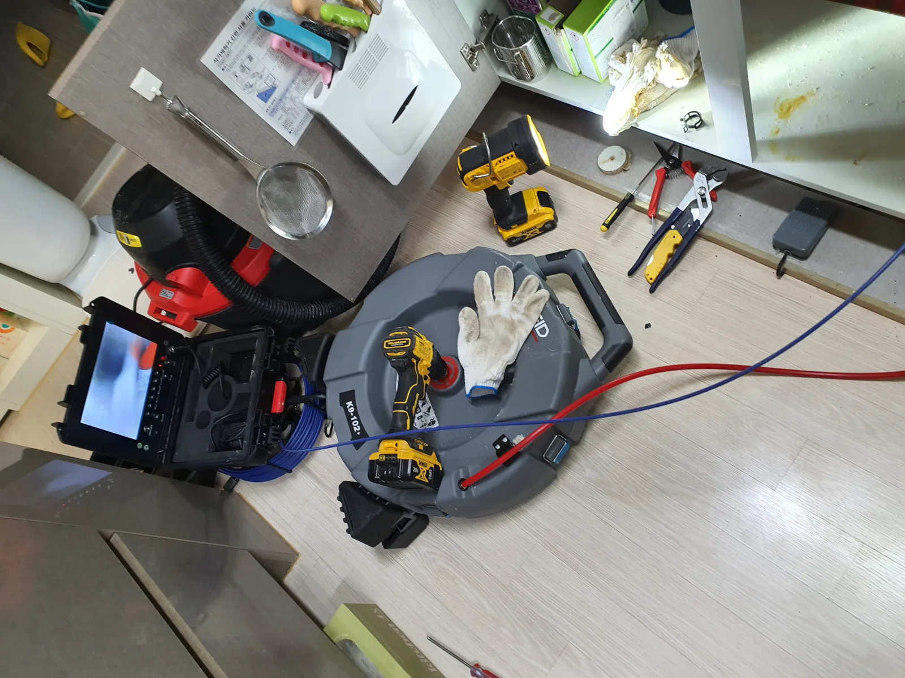
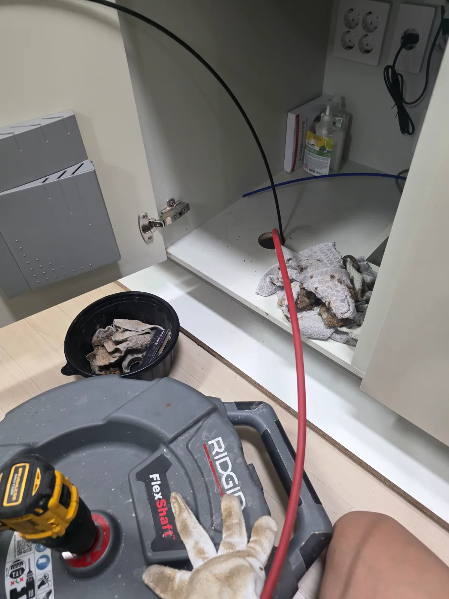

화성시 병점구 병점동 하수구막힘비용 | 식당 배수 작업의 견적 확인 항목
화성시 병점구 병점동 하수구막힘비용. 식당 트렌치에서 내시경 점검과 샤프트 작업 후 정상 통수를 확인한 실제 현장을 바탕으로 식당 배수 작업의 견적 확인 항목을 안내합니다.
경기 · 화성시
신라건축설비가 화성시에서 직접 진단하고 해결한 실제 작업 기록입니다.
화성시 병점구 병점동 하수구막힘비용. 식당 트렌치에서 내시경 점검과 샤프트 작업 후 정상 통수를 확인한 실제 현장을 바탕으로 식당 배수 작업의 견적 확인 항목을 안내합니다.

화성시 병점구 병점동 식당하수구막힘. 식당 트렌치에서 내시경 점검과 샤프트 작업 후 정상 통수를 확인한 실제 현장을 바탕으로 트렌치와 연결 배관 점검 과정을 안내합니다.

화성시 병점구 병점동 주방하수구막힘. 식당 트렌치에서 내시경 점검과 샤프트 작업 후 정상 통수를 확인한 실제 현장을 바탕으로 바닥 배수로와 연결 배관 해결 과정을 안내합니다.

화성시 병점구 병점동 하수구업체. 식당 트렌치에서 내시경 점검과 샤프트 작업 후 정상 통수를 확인한 실제 현장을 바탕으로 방문 일정·견적·통수 확인 기준을 안내합니다.

화성시 병점구 병점동 하수구막힘 식당 하수구막힘 사례 트랜치에서 약 2시간 샤프트 작업을 반복하고 물을 흘려 정상 통수를 확인했습니다

화성시 동탄구 청계동 싱크대막힘 아파트에 자정에 도착해 싱크대 배관의 기름때 막힘을 점검했습니다 석션과 리지드 K9 102 샤프트 배관스케일링을

화성시 청계동 싱크대막힘 싱크대 하부를 개방해 샤프트로 굳은 기름때와 음식물 슬러지를 제거한 뒤 정상 배수 확인